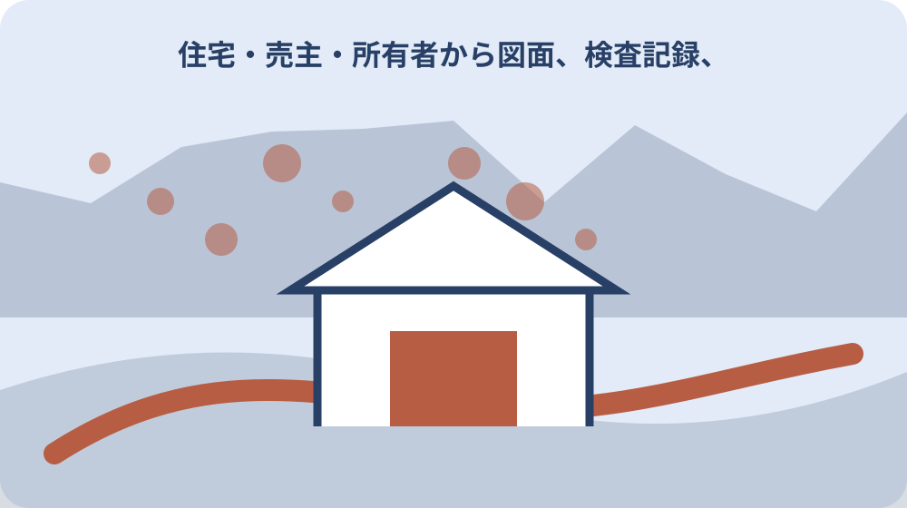

先に結論を確認する
この記事の答え：解体日、町の家屋取り壊し届、法務局の建物滅失登記、写真と契約書を別手続として管理したいため、対象、基準日、公式資料、未確認事項を最初の一行へ置きます。
森町で最初に照合する条件：森町公式の二つの異なる案内を2026-08-13に確認する
解体対象の家屋番号と所在地を固定する
『解体対象の家屋番号と所在地を固定する』を調べる場面では、解体対象の家屋番号と所在地を固定するでは、まず森町は家屋を取り壊した場合の家屋取り壊し届出書を公開しています。『解体対象の家屋番号と所在地を固定する』を調べる場面では、この事実を出発点に、対象者・対象物・確認日を同じ行へ置きます。『解体対象の家屋番号と所在地を固定する』を調べる場面では、森町で家屋を取り壊した後の町届・滅失登記記録の判断を口頭だけで進めず、根拠となるページ名と更新日も併記してください。
『解体対象の家屋番号と所在地を固定する』を調べる場面では、公式案内の共通条件と、手元の個別事情を二列に分けます。『解体対象の家屋番号と所在地を固定する』を調べる場面では、森町は家屋を取り壊した場合の家屋取り壊し届出書を公開していますという根拠は左へ、解体対象の家屋番号と所在地を固定するでまだ調べる対象は右へ置き、ページ本文から読み取れない事情を補いません。
『解体対象の家屋番号と所在地を固定する』を調べる場面では、原資料の名称と確認日を記したら、数字・人名・物件番号を原文のまま転記します。『解体対象の家屋番号と所在地を固定する』を調べる場面では、町届と滅失登記を二列に分けるへ移る前に、森町へ尋ねる質問を一つだけ決め、回答欄を空けて待ちます。
『解体対象の家屋番号と所在地を固定する』を調べる場面では、この節は、対象が一意に決まり、根拠URLへ戻れ、次の担当が読める状態で終了です。『解体対象の家屋番号と所在地を固定する』を調べる場面では、解体対象の家屋番号と所在地を固定するに未確認があれば、結論欄ではなく再確認日の欄を埋めます。
『解体対象の家屋番号と所在地を固定する』を調べる場面では、1番目の確認として『解体対象の家屋番号と所在地を固定する』を保存するときは、根拠となる『森町は家屋を取り壊した場合の家屋取り壊し届出書を公開しています』と今回の対象を一本の線で結びます。『解体対象の家屋番号と所在地を固定する』を調べる場面では、資料の写しには取得日、個別メモには記入者、問い合わせ結果には回答日を付け、次に読む人が公式事実と家族の判断を取り違えない状態にしてください。
町届と滅失登記を二列に分ける
『町届と滅失登記を二列に分ける』用の一件表に、手元の書類を開いたら、町届と滅失登記を二列に分けるに関係する名称、番号、日付を原文どおり写します。『町届と滅失登記を二列に分ける』用の一件表に、略称や家族の呼び名へ置き換える前に、家屋取り壊し届出書にはPDF版、Word版、記入例、電子申請がありますという公式案内と一致する欄を見つけることが重要です。
『町届と滅失登記を二列に分ける』用の一件表に、ここでは『家屋取り壊し届出書にはPDF版、Word版、記入例、電子申請があります』を確認線にします。『町届と滅失登記を二列に分ける』用の一件表に、家族の記憶と公式記載が違うときは両方を残し、町届と滅失登記を二列に分けるの判断材料として同じ意味に丸めないでください。
『町届と滅失登記を二列に分ける』用の一件表に、書類の版、発行元、対象期間を余白へ書くと、後日の更新と区別できます。『町届と滅失登記を二列に分ける』用の一件表に、続く解体請負契約書と領収記録を残すで必要になる資料だけを抜き出し、原本の束は崩さず保管します。
『町届と滅失登記を二列に分ける』用の一件表に、作業者は確認した日時と方法を署名代わりに残します。『町届と滅失登記を二列に分ける』用の一件表に、町届と滅失登記を二列に分けるの答えが出ない場合も、調査経路が見えるなら一段階は完了です。
『町届と滅失登記を二列に分ける』用の一件表に、2番目の確認として『町届と滅失登記を二列に分ける』を保存するときは、根拠となる『家屋取り壊し届出書にはPDF版、Word版、記入例、電子申請があります』と今回の対象を一本の線で結びます。『町届と滅失登記を二列に分ける』用の一件表に、資料の写しには取得日、個別メモには記入者、問い合わせ結果には回答日を付け、次に読む人が公式事実と家族の判断を取り違えない状態にしてください。
解体請負契約書と領収記録を残す
『解体請負契約書と領収記録を残す』の対象について、この段階の要点は、相続家屋を取り壊した土地の確認申請には別記様式1-2を使います。『解体請負契約書と領収記録を残す』の対象について、対象外かもしれない情報まで結論に混ぜず、確認できた範囲を枠で囲みます。『解体請負契約書と領収記録を残す』の対象について、次の窓口へ渡す際は、何を見て判断したかが一目で戻れる形にします。
『解体請負契約書と領収記録を残す』の対象について、解体請負契約書と領収記録を残すの判断は制度名ではなく対象の一致で行います。『解体請負契約書と領収記録を残す』の対象について、相続家屋を取り壊した土地の確認申請には別記様式1-2を使いますを参照しつつ、氏名・住所・年月・設備位置のうち記事に必要な識別子だけを確認票へ写します。
『解体請負契約書と領収記録を残す』の対象について、窓口へ伝える文章は、現状、知りたいこと、持参できる資料の順に組み立てます。『解体請負契約書と領収記録を残す』の対象について、工事前後の写真を同じ方向で撮るへ渡す値を一つに絞ると、質問が別制度へ広がりません。
『解体請負契約書と領収記録を残す』の対象について、確認済みには根拠資料、対象外には理由、未確認には連絡先を付けます。『解体請負契約書と領収記録を残す』の対象について、三つの欄が埋まれば、解体請負契約書と領収記録を残すを家族へ引き継げます。
『解体請負契約書と領収記録を残す』の対象について、3番目の確認として『解体請負契約書と領収記録を残す』を保存するときは、根拠となる『相続家屋を取り壊した土地の確認申請には別記様式1-2を使います』と今回の対象を一本の線で結びます。『解体請負契約書と領収記録を残す』の対象について、資料の写しには取得日、個別メモには記入者、問い合わせ結果には回答日を付け、次に読む人が公式事実と家族の判断を取り違えない状態にしてください。
工事前後の写真を同じ方向で撮る
『工事前後の写真を同じ方向で撮る』へ進む前に、工事前後の写真を同じ方向で撮るを実行するときは、公式案内にある『取り壊し後土地の確認申請では除却工事の請負契約書の写しが必要です』を基準にします。『工事前後の写真を同じ方向で撮る』へ進む前に、手続名が似ていても目的や起算日が違うため、一件の記録へ詰め込まず、証明・申請・現地確認を別行で管理します。
『工事前後の写真を同じ方向で撮る』へ進む前に、『取り壊し後土地の確認申請では除却工事の請負契約書の写しが必要です』は全員に同じ結果を保証する文ではありません。『工事前後の写真を同じ方向で撮る』へ進む前に、工事前後の写真を同じ方向で撮るでは、公式条件に自分の対象が当てはまるかを一項目ずつ照合します。
『工事前後の写真を同じ方向で撮る』へ進む前に、期限が見える資料には取得日も添えます。『工事前後の写真を同じ方向で撮る』へ進む前に、次の家屋取り壊し届の様式を取得するで古い数字を再利用しないよう、確認時点を日付で囲んでください。
『工事前後の写真を同じ方向で撮る』へ進む前に、この場で決められない個別条件は窓口確認へ回します。『工事前後の写真を同じ方向で撮る』へ進む前に、工事前後の写真を同じ方向で撮るを推測で完了扱いにせず、回答者と回答日まで入った時点で確定にします。
『工事前後の写真を同じ方向で撮る』へ進む前に、4番目の確認として『工事前後の写真を同じ方向で撮る』を保存するときは、根拠となる『取り壊し後土地の確認申請では除却工事の請負契約書の写しが必要です』と今回の対象を一本の線で結びます。『工事前後の写真を同じ方向で撮る』へ進む前に、資料の写しには取得日、個別メモには記入者、問い合わせ結果には回答日を付け、次に読む人が公式事実と家族の判断を取り違えない状態にしてください。

家屋取り壊し届の様式を取得する
『家屋取り壊し届の様式を取得する』の資料欄には、家屋取り壊し届の様式を取得するでは、まず取り壊し後から譲渡までの敷地使用状況が分かる写真が必要です。『家屋取り壊し届の様式を取得する』の資料欄には、この事実を出発点に、対象者・対象物・確認日を同じ行へ置きます。『家屋取り壊し届の様式を取得する』の資料欄には、森町で家屋を取り壊した後の町届・滅失登記記録の判断を口頭だけで進めず、根拠となるページ名と更新日も併記してください。
『家屋取り壊し届の様式を取得する』の資料欄には、まず取り壊し後から譲渡までの敷地使用状況が分かる写真が必要ですを確認票の見出し下へ引用せず要約します。『家屋取り壊し届の様式を取得する』の資料欄には、その下に家屋取り壊し届の様式を取得するの対象番号を置けば、一般案内と今回の一件を混同しにくくなります。
『家屋取り壊し届の様式を取得する』の資料欄には、写真や画面保存には撮影方向・取得日・ページ名を付けます。『家屋取り壊し届の様式を取得する』の資料欄には、登記の有無を登記事項で確かめるで照合するとき、同名の別資料を開いても違いを見つけられます。
『家屋取り壊し届の様式を取得する』の資料欄には、完了印を付ける前に、別の家族が同じ対象へ到達できるか試します。『家屋取り壊し届の様式を取得する』の資料欄には、迷った箇所は家屋取り壊し届の様式を取得するの備考へ戻し、判断語を削ります。
『家屋取り壊し届の様式を取得する』の資料欄には、5番目の確認として『家屋取り壊し届の様式を取得する』を保存するときは、根拠となる『取り壊し後から譲渡までの敷地使用状況が分かる写真が必要です』と今回の対象を一本の線で結びます。『家屋取り壊し届の様式を取得する』の資料欄には、資料の写しには取得日、個別メモには記入者、問い合わせ結果には回答日を付け、次に読む人が公式事実と家族の判断を取り違えない状態にしてください。
登記の有無を登記事項で確かめる
『登記の有無を登記事項で確かめる』を照合するとき、手元の書類を開いたら、登記の有無を登記事項で確かめるに関係する名称、番号、日付を原文どおり写します。『登記の有無を登記事項で確かめる』を照合するとき、略称や家族の呼び名へ置き換える前に、取り壊し後土地の確認では固定資産課税台帳や課税明細書の写しを用いますという公式案内と一致する欄を見つけることが重要です。
『登記の有無を登記事項で確かめる』を照合するとき、登記の有無を登記事項で確かめるで扱う公式事実は『取り壊し後土地の確認では固定資産課税台帳や課税明細書の写しを用います』です。『登記の有無を登記事項で確かめる』を照合するとき、これに該当しない家族事情や現場状態は、別紙の個別確認欄へ移して根拠の種類を分けます。
『登記の有無を登記事項で確かめる』を照合するとき、原本、写し、ウェブ画面は証拠力も更新方法も違います。『登記の有無を登記事項で確かめる』を照合するとき、相続空き家特例の確認書と混同しないへ進む際は、どの媒体を見たかまで記録してください。
相続空き家特例の確認書と混同しない
『相続空き家特例の確認書と混同しない』の質問票で、この段階の要点は、被相続人の除票住民票と相続人全員の住民票の写しが必要です。『相続空き家特例の確認書と混同しない』の質問票で、対象外かもしれない情報まで結論に混ぜず、確認できた範囲を枠で囲みます。『相続空き家特例の確認書と混同しない』の質問票で、次の窓口へ渡す際は、何を見て判断したかが一目で戻れる形にします。
『相続空き家特例の確認書と混同しない』の質問票で、資料上の条件を先に固定します。『相続空き家特例の確認書と混同しない』の質問票で、今回は被相続人の除票住民票と相続人全員の住民票の写しが必要ですが基準なので、相続空き家特例の確認書と混同しないに関係する手元資料へ同じ用語があるかを探します。
『相続空き家特例の確認書と混同しない』の質問票で、用語が一致しないときは勝手に言い換えず、双方の名称を並記します。『相続空き家特例の確認書と混同しない』の質問票で、除却後土地の使用状況を撮影するの窓口質問には、その差を短く添えます。
除却後土地の使用状況を撮影する
『除却後土地の使用状況を撮影する』の期限管理では、除却後土地の使用状況を撮影するを実行するときは、公式案内にある『森町が確認書を交付できるのは森町内に所在する家屋に限られます』を基準にします。『除却後土地の使用状況を撮影する』の期限管理では、手続名が似ていても目的や起算日が違うため、一件の記録へ詰め込まず、証明・申請・現地確認を別行で管理します。
『除却後土地の使用状況を撮影する』の期限管理では、森町が確認書を交付できるのは森町内に所在する家屋に限られますという案内から、今回確認すべき欄だけを抽出します。『除却後土地の使用状況を撮影する』の期限管理では、除却後土地の使用状況を撮影すると無関係な制度説明まで転記すると重要な差が埋もれるため、採用理由も一言添えます。
『除却後土地の使用状況を撮影する』の期限管理では、数字は単位と起算点を離しません。『除却後土地の使用状況を撮影する』の期限管理では、固定資産課税資料の年度を残すへ数値を渡すときは、誰の、何の、いつの数字かを一行で説明します。
固定資産課税資料の年度を残す
『固定資産課税資料の年度を残す』を家族で見るなら、固定資産課税資料の年度を残すでは、まず確認書の交付は通常一週間から十日程度かかると案内されています。『固定資産課税資料の年度を残す』を家族で見るなら、この事実を出発点に、対象者・対象物・確認日を同じ行へ置きます。『固定資産課税資料の年度を残す』を家族で見るなら、森町で家屋を取り壊した後の町届・滅失登記記録の判断を口頭だけで進めず、根拠となるページ名と更新日も併記してください。
『固定資産課税資料の年度を残す』を家族で見るなら、この節の根拠は確認書の交付は通常一週間から十日程度かかると案内されていますです。『固定資産課税資料の年度を残す』を家族で見るなら、固定資産課税資料の年度を残すでは、公式の対象範囲と実物の状態を別の色で記し、資料だけで現地確認を済ませません。
『固定資産課税資料の年度を残す』を家族で見るなら、問い合わせで得た回答は、質問文と組にして保存します。『固定資産課税資料の年度を残す』を家族で見るなら、提出先と受付日を別々に記録するに関する別回答と混ざらないよう、担当部署も同じ行へ置きます。
提出先と受付日を別々に記録する
『提出先と受付日を別々に記録する』の更新確認時に、手元の書類を開いたら、提出先と受付日を別々に記録するに関係する名称、番号、日付を原文どおり写します。『提出先と受付日を別々に記録する』の更新確認時に、略称や家族の呼び名へ置き換える前に、郵送申請では郵便料金分の切手を貼った返信用封筒を同封しますという公式案内と一致する欄を見つけることが重要です。
『提出先と受付日を別々に記録する』の更新確認時に、提出先と受付日を別々に記録するの入口では、郵送申請では郵便料金分の切手を貼った返信用封筒を同封しますを現在の公式条件として採用します。『提出先と受付日を別々に記録する』の更新確認時に、過去の案内を持つ場合は上書きせず、旧版として横へ残してください。
『提出先と受付日を別々に記録する』の更新確認時に、更新差を見つけたら、実行予定日より前に窓口へ確認します。『提出先と受付日を別々に記録する』の更新確認時に、大石の視点：解体済みを口頭で済ませないの作業日は、回答後に決める方が手戻りを減らせます。
大石の視点：解体済みを口頭で済ませない
『大石の視点：解体済みを口頭で済ませない』という実務提案では、この段階の要点は、町の家屋取り壊し届と被相続人居住用家屋等確認書は別の手続です。『大石の視点：解体済みを口頭で済ませない』という実務提案では、対象外かもしれない情報まで結論に混ぜず、確認できた範囲を枠で囲みます。『大石の視点：解体済みを口頭で済ませない』という実務提案では、次の窓口へ渡す際は、何を見て判断したかが一目で戻れる形にします。
『大石の視点：解体済みを口頭で済ませない』という実務提案では、公的事実と私の提案を混ぜません。『大石の視点：解体済みを口頭で済ませない』という実務提案では、町の家屋取り壊し届と被相続人居住用家屋等確認書は別の手続ですは資料で確認できる内容であり、大石の視点：解体済みを口頭で済ませないを一行管理する方法は私、大石浩之の実務提案です。
『大石の視点：解体済みを口頭で済ませない』という実務提案では、提案は森町や所管機関の公式見解ではありません。『大石の視点：解体済みを口頭で済ませない』という実務提案では、町届・登記・税資料の一件袋を閉じるへ進む順序も個別事情で変わるため、担当窓口の回答を優先します。
町届・登記・税資料の一件袋を閉じる
『町届・登記・税資料の一件袋を閉じる』の最終点検として、町届・登記・税資料の一件袋を閉じるを実行するときは、公式案内にある『不動産登記法には建物滅失時の登記申請に関する規定があります』を基準にします。『町届・登記・税資料の一件袋を閉じる』の最終点検として、手続名が似ていても目的や起算日が違うため、一件の記録へ詰め込まず、証明・申請・現地確認を別行で管理します。
『町届・登記・税資料の一件袋を閉じる』の最終点検として、最後に不動産登記法には建物滅失時の登記申請に関する規定がありますをもう一度原資料で照合します。『町届・登記・税資料の一件袋を閉じる』の最終点検として、町届・登記・税資料の一件袋を閉じるの記録が制度の説明だけになっていないか、今回の対象を示す番号や日付があるかを確認してください。
『町届・登記・税資料の一件袋を閉じる』の最終点検として、解体対象の家屋番号と所在地を固定するへ引き継ぐ資料は、最新版、旧版、個別証拠の三束に分けます。『町届・登記・税資料の一件袋を閉じる』の最終点検として、紛失防止のため保管場所とファイル名も一覧へ入れます。